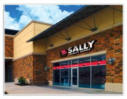

Retail Dive - Latest News
フィード
Family Dollar will pay $63M to settle unfair-pricing claims from state, federal regulators
Retail Dive - Latest News
The discounter said it’s cooperating and “focused on strengthening pricing accuracy across our stores and maintaining our customers' trust.”
1日前
The Weekly Closeout: Target names a new board member and Centric Brands sells itself to CEO
Retail Dive - Latest News
The big-box retailer appointed Sally Grimes as an independent director. Meanwhile, Jason Rabin took ownership of the conglomerate.
1日前

Sally Beauty to expand refreshed store model in 2027
Retail Dive - Latest News
The beauty supply retailer will grow the Sally Ignited store concept and has long-term plans to refresh two-thirds of its overall store fleet.
1日前
BNPL bolsters holiday budgets
Retail Dive - Latest News
Younger shoppers favor buy now, pay later more than older generations, but BNPL companies draw consumers across income brackets, a survey finds.
2日前
Michaels encourages a screen-free holiday season
Retail Dive - Latest News
The retailer is promoting hands-on creativity with its “Countdown to Craftsmas” Advent calendar, alongside early Black Friday deals.
2日前
Walmart more than doubles planned drone delivery sites
Retail Dive - Latest News
An expansion with drone operator Zipline will allow the retailer to make rapid air delivery available to customers nationwide over the next several years.
2日前
TikTok Shop pilots paid membership
Retail Dive - Latest News
The company recently rolled out a paid tier to 1 million shoppers. With membership, consumers get free shipping and exclusive discounts.
2日前
Calvin Klein, Tommy Hilfiger owner to cut 4% of workforce
Retail Dive - Latest News
PVH Corp.'s enterprisewide initiative aims to improve productivity and long-term profitability, with a goal of achieving $100 million in cost savings during fiscal 2027.
2日前
Consumers face higher grocery prices
Retail Dive - Latest News
Grocery inflation rose in October, as fuel price increases pushed up the costs of many foods.
2日前
Dick’s Sporting Goods signs Caitlin Clark
Retail Dive - Latest News
The exclusive deal includes both Dick’s and Foot Locker, and is the first time either company has signed an athlete as a brand partner.
3日前